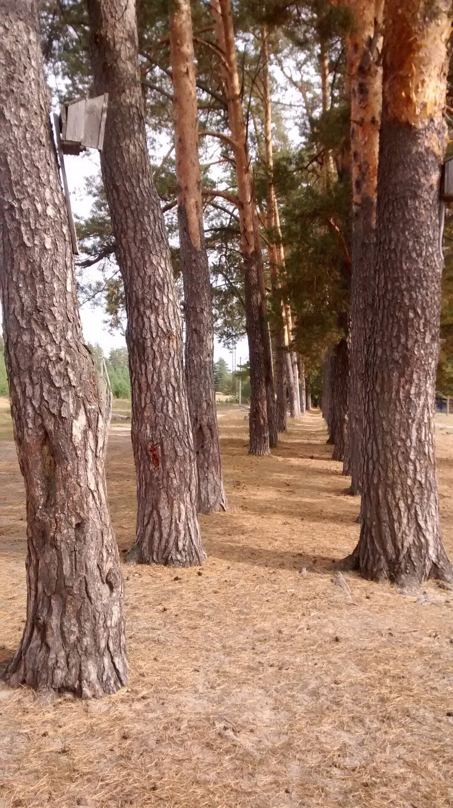
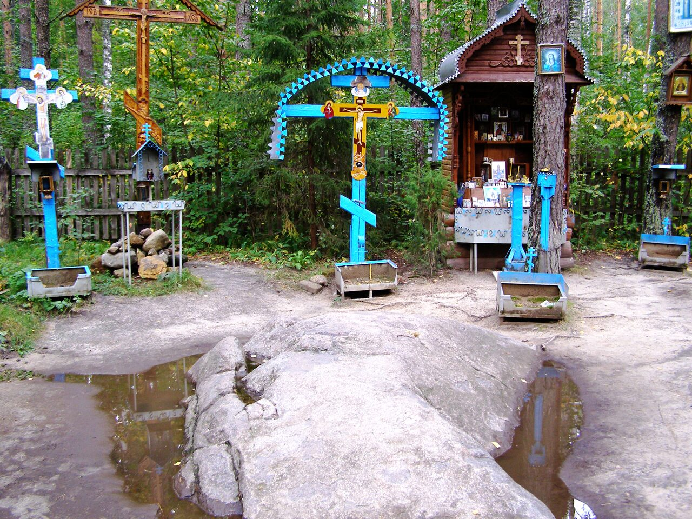

"ИСТОЧНИК СЕРАФИМА САРОВСКОГО"
Обязательно посетите самый известный и почитаемый источник Серафима Саровского в Цыгановке.
"Когда люди поносят нас,
то мы должны считать себя недостойными похвалы,
представляя, что ежели бы были достойны,
то все кланялись бы нам." (Серафим Саровский).
"ЦЕРКОВЬ УСПЕНИЯ ПРЕСВЯТОЙ БОГОРОДИЦЫ"
Приложитесь к мощам Суворовских новомучениц и к чудотворной иконе "Умягчение злых сердец"
и получите помощь в исцелении душевном и телесном, а также в решении житейских бытовых проблем.
"Дух смущенного или унывающего человека
надобно стараться ободрить словом любви"
"ИСТОЧНИК ЯВЛЕННЫЙ"
Источник с особой целительной энергетикой - незаменим при болезнях опорно-двигательного аппарата,
а также именно здесь будут услышаны молитвы тех, кто уже долго мечтает о детском смехе в своем доме.
"Осуждай дурное дело,
а самого делающего не осуждай".
"МАЛЫЙ КАМУШЕК БАТЮШКИ СЕРАФИМА. ЦАРСКИЙ СКИТ, БОГОРОДНИЧНАЯ АЛЛЕЙКА"
Вы посетите место подвига батюшки Серафима в дремучем сосновом лесу.
Получите исцеление от растущих камней.
Пройдете по аллейке, приравненной по значимости Богородничной Канавке в монастыре



Стоимость экскурсии - от 1500 рублей

Телефон: 8 910 131 65 93

Mail: parkovaja7@mail.ru

WhatsApp: 8 910 131 65 93
 Местные экскурсоводы лучше всех знают историю монастыря, с трепетом и любовью относятся к своей родине.
Местные экскурсоводы лучше всех знают историю монастыря, с трепетом и любовью относятся к своей родине.